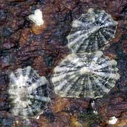
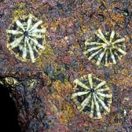
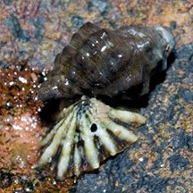
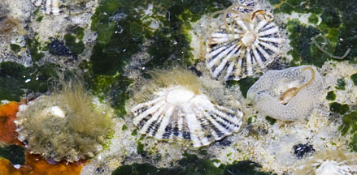
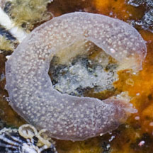

|
|
| shelled snails text index | photo index |
| Phylum Mollusca > Class Gastropoda > Limpets |
| Javan
false limpet Siphonaria javanica Family Siphonariidae updated Aug 2020 Where seen?This limpet with prominent ribs is commonly seen in small groups mainly on our Southern shores. On boulders near the high water mark. Features: 1-2cm long, elsewhere 3-4cm. Shell thin conical with 10-12 thick broad white ribs. There is no hole at the top of the shell. Greenish foot . A false limpet, it breathes through lungs instead of gills. This limpet is often preyed upon by drills. Human uses: It is sometimes collected as food by coastal dwellers in Southeast Asia. |
|
 Pulau Sekudu, Feb 07 |
 St. John's Island, Sep 04 |
 Drill snail drilled a hole in the limpet shell. St. John's Island, Sep 07 Photo shared by Marcus Ng on flickr. |
| Limpet Babies: Siphonaria limpets lay eggs in circular or coiling jelly-like masses that contain thousands of eggs suspended in a gelatinous matrix, attached to a hard surface. The free-swimming limpet larvae have a little spiral shell like other 'normal' snails. As they develop, the shell flattens and becomes umbrella-shaped. |
|
 Coiled egg mass laid on a rock. East Coast Park, Aug 11 |
 Tiny eggs embedded in the coiled egg mass. East Coast Park, Aug 11 |
|
| Javan false limpets on Singapore shores |
On wildsingapore
flickr
|
| Other sightings on Singapore shores |
|
Links
References
|